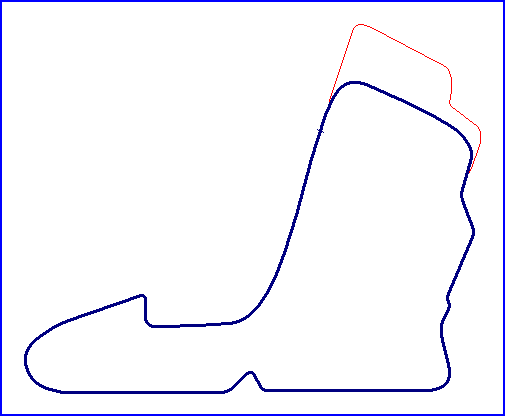

Myachkovo
Moscowring (2001+)

| Length | 1.491 Miles // 2.400 km |
| Direction | Anticlockwise |
Contact Information |
|
| Address | |
| Telephone | +7 (095) 7412830 |
| Website | http://www.moscow-ring.ru |
racingcircuits.net - Lasted Updated: 21 July 2005 14:48:34 GMT Daylight Time